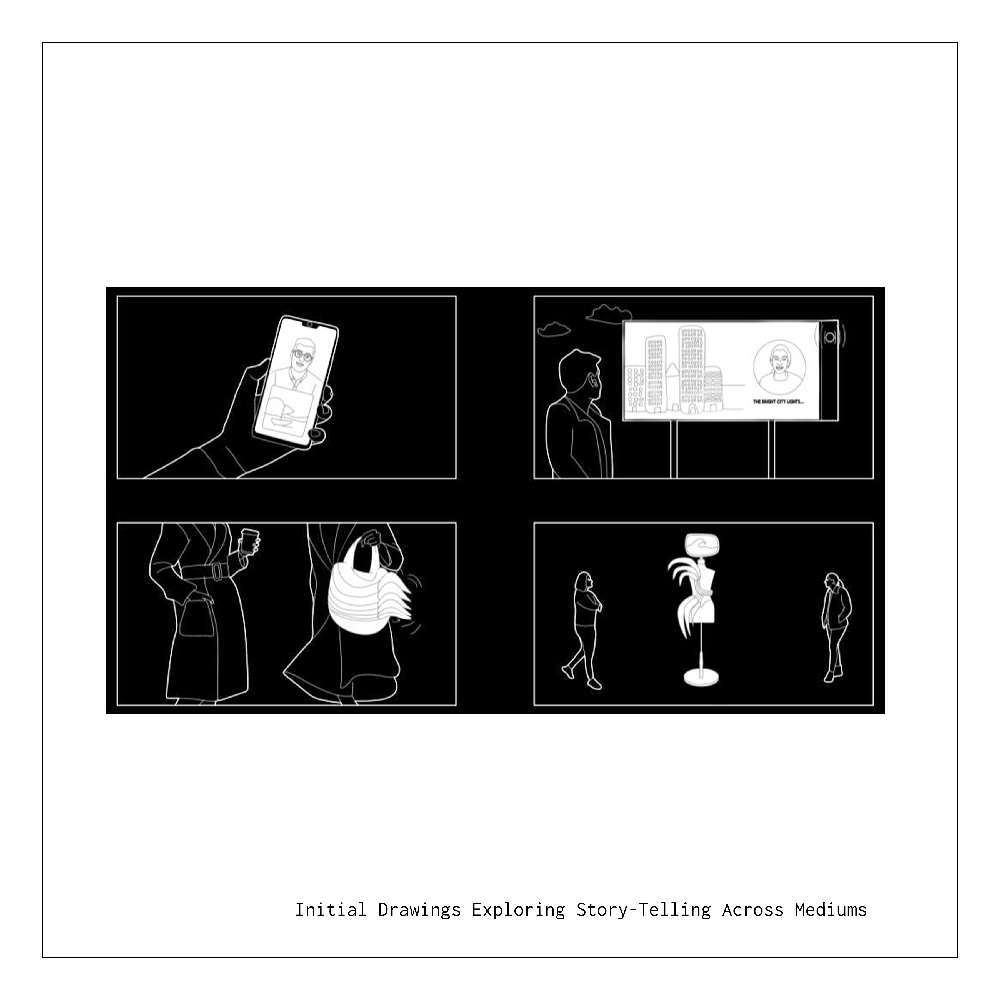
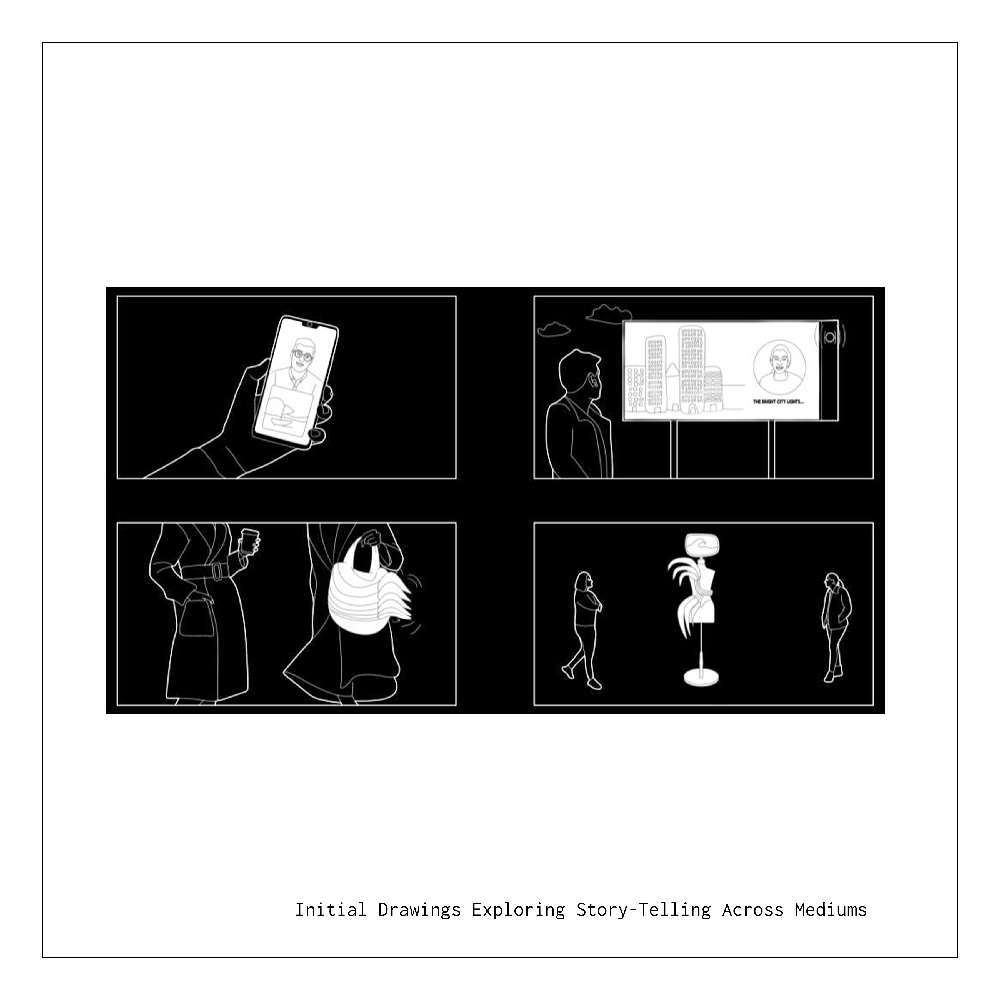

Deep Communication
Spring 2023 | Professor Allan Sayegh | Created in collaboration with T.D. Radhakrishnan
Deep Communication investigates storytelling as a multi-channel phenomenon rather than a purely linguistic exchange. The project asks how subjective experience can be represented and transmitted when language is insufficient, and how such representations might be structured to support interpersonal understanding across both intimate and networked contexts. The work operationalizes narrative as signal by capturing physiological and audio inputs and translating them into paired interfaces: a remote system that generates visual accompaniment to spoken narration in real time, and a fabricated wearable that encodes the narrative as embodied form.
Across both prototypes, the core methodological commitment is translation without reduction to text alone. Speech, heart rate, and electrophysiological readings were treated as complementary descriptors of a story’s affective and temporal structure, then mapped into visual, haptic, and material outputs designed to be legible to an external viewer or listener.
 

Research Question
How can a responsive communication system represent and transmit self-experience across body-scale and planetary-scale contexts, translating subjective narrative into shared, multi-sensory outputs that support empathy and perceived interconnectedness?
Remote Translation
The remote prototype implements a pipeline that converts live speech into time-sequenced prompts for image generation. Spoken narration is processed through language detection and transcription, then segmented into short textual units that drive an image model at fixed intervals. This structure preserves the continuity of speech while producing a parallel visual stream, avoiding the interruption typically introduced by manual prompting. In parallel, a heart-rate quotient is mapped to haptic vibration, providing a secondary channel that conveys physiological cadence alongside the narrative.
The system was evaluated through small-scale user testing. Participants who did not understand the original spoken language reported extracting affective information from prosody and pacing, supporting the choice to preserve original speech rather than translating content. When visual output and haptic rhythm accompanied the narration, most participants reported increased perceived connectedness and empathy relative to audio-only presentation.

Fashion as Communication: Investigation and Process
This branch of the project examines fashion as a communicative system in which identity, affiliation, and narrative are carried through material and silhouette. Drag performance provided a concrete site for this investigation due to its explicit reliance on garment-based storytelling and its history of amplified semiotic expression. The objective was not to treat fashion as ornament, but as an interface capable of encoding and transmitting multi-layered information.
I collaborated with Candace Persuasion, the Trans Health Representative at Mass General Hospital and a drag performer, to develop a wearable that extends narrative capacity through computational fabrication. Candace’s performance practice already uses text and styling as declarative messaging; this work asked how physiological and biographical data might be incorporated as additional layers of meaning without reducing lived experience to a single metric.
A photogrammetric scan of Candace was captured to support fit and proportional accuracy. To construct an emotional dataset for translation, Candace narrated her transition story under simultaneous physiological monitoring, producing synchronized time-based streams that could be mapped into pattern and material behavior. The intent was to preserve the narrative’s temporal structure and intensity rather than extracting a simplified summary.
The electrophysiological readings were treated as a modulation source rather than a diagnostic claim. Changes in signal intensity were used to locate moments of heightened engagement and to drive variation in surface density and panel behavior across the garment.

Final 3D-Printed Wearable
The final garment was developed through iterative form studies and material tests, moving from paper and soft-model prototypes into flexible printed assemblies. The fabrication strategy uses individually printed TPU panels that can be assembled and tuned for local movement, producing a surface that behaves as a responsive skin rather than a rigid shell.
Physiological time-series data was mapped onto the body to modulate density and pattern across the garment, producing regional variation that corresponds to narrative intensity. The design emphasizes a hyper-feminine silhouette while treating surface articulation as a data-bearing layer. The resulting piece operates as an embodied record of story, structured to be read through movement, texture, and rhythm in performance.